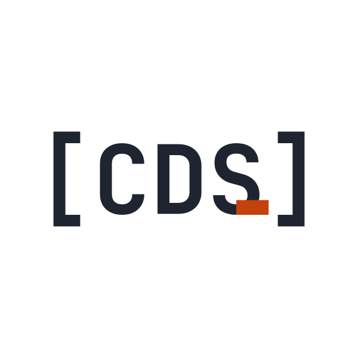

Identity & Construction
The CDS mark is generated, not drawn. Every asset comes from build-brand.js — JetBrains Mono Bold for the letterforms, four locked geometric rules for the rust bar, paths for everything else.
Horizontal — [CDS] with rust bar
The primary mark, vertically centered in a 100×28 viewBox. Used in the site header, on social cards, in the email footer.
Same mark, square canvas for cropping
Vertically centered in a 600×600 viewBox so the mark can be cropped to any aspect ratio without re-aligning. Use for profile pictures, app icons, Telegram channel avatars.


Square companion mark — [_]
For browser tabs and small square slots where the full wordmark won’t read. Same construction rules as the logo, brackets only. The rust bar sits at the position S would occupy.
≈ 16×16

64 · dark≈ 16×16
Four constraints lock the bar to S
The bar isn’t placed by eye. Every edge is anchored to a measurable feature of the S glyph and the surrounding monospace cell. Re-render the mark at any size and the bar’s proportions stay locked.
Left edge = S horizontal cell center
The bar’s left edge sits at the midpoint of S’s monospace cell — independent of S’s glyph shape. In viewBox terms: startX + 3.5 × cellW.
Right edge = midpoint of visible gap between S glyph right and ] glyph left
The bar must not collide with the closing bracket. It stops exactly halfway through the visible whitespace between S’s bbox.x2 and ]’s bbox.x1.
Bottom edge = S visual bottom (overshoot included)
S — like all round-bottom letters — descends a hair below the typographic baseline (overshoot, from bbox.y1). The bar aligns with S’s actual visual bottom, not the typographic baseline.
Height = (4 ÷ 26) × fontSize
Proportional to the type, locked at the wordmark’s base ratio (4 units of bar in a 26-unit fontSize). Scales identically at every output size — header, favicon, social card.
Brackets stretched so inner cavity = letter range
A monospace ] in JetBrains Mono Bold has thick horizontal arms — at the font’s natural size, its inner cavity is narrower than the letter range. We scale the brackets vertically (uniform Y-only scale) so that:
- ·the bottom edge of the top arm meets the top of the letters (S cap + overshoot)
- ·the top edge of the bottom arm meets the bottom of the letters (S visual bottom)
K = letter visual height ÷ bracket inner cavity height
For JetBrains Mono Bold, K ≈ 1.056. Applied as translate(0, ty) scale(1, K) where ty places the bracket’s inner top exactly at the letter top.
Side effect: arms scale with K too, so the brackets read slightly heavier than the unscaled font glyphs. Acceptable trade — alignment beats stroke purity.
The baseline isn’t the visual center
Because cap height + S overshoot top occupies ~95% of the letter range and S overshoot bottom only ~5%, the wordmark’s visual center sits below the typographic baseline. Naively setting baselineY = vbH / 2 produces a logo that looks shifted upward.
The correct baseline:
fullHeight = letterHeight + 2 × K × armThickness
topY = (vbH − fullHeight) / 2
baselineY = topY + letterTopAbove + K × armThicknessWhere letterHeight is S’s visual top-to-bottom range and armThickness is the bracket’s pre-scale horizontal-arm thickness, both at the chosen fontSize.
Three colors. No exceptions.
#1E2530
#FBFAF7
#C2410C
Four faces, distinct roles
JetBrains Mono Bold
Letterforms in the logo and favicon. Extracted as paths via opentype.js so marks render identically regardless of font availability.
Syne 800
Page headings, hero copy, the “DoubleTrends™” wordmark beside the logo in the site header.
DM Sans · 400 / 500 / 700
All body copy, navigation, UI labels, button text.
JetBrains Mono · 400 / 700
Eyebrows, data labels, status pills, code blocks, terminal motifs. The aesthetic spine of the brand.
Everything lives in public/brand/
Regenerated by npm run brand. The source of truth is build-brand.js — do not hand-edit the generated SVGs or PNGs.
| File | Use |
|---|---|
| cds-logo.svg | Primary logo · auto color via prefers-color-scheme |
| cds-logo-light.png | ~800px PNG · dark glyphs · email, social embeds |
| cds-logo-dark.png | ~800px PNG · light glyphs · dark backgrounds |
| cds-logo-square.svg | 600×600 SVG · logo on square canvas, for cropping |
| cds-logo-square-light.png | 1024×1024 PNG · dark glyphs |
| cds-logo-square-dark.png | 1024×1024 PNG · light glyphs |
| cds-favicon.svg | Browser favicon · auto color |
| cds-favicon-32 / -180 / -512.png | PNG favicons · dark glyphs (legacy, apple-touch, PWA) |
| cds-favicon-dark-32 / -180 / -512.png | PNG favicons · light glyphs (Telegram dark, dark-mode apps) |
| og-image.png | 1200×630 social card · OG and Twitter preview |